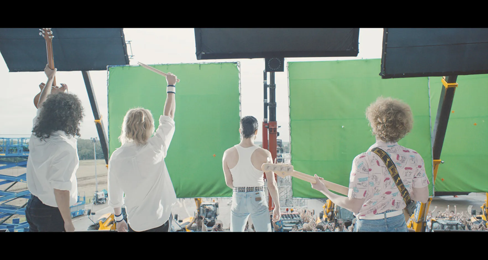
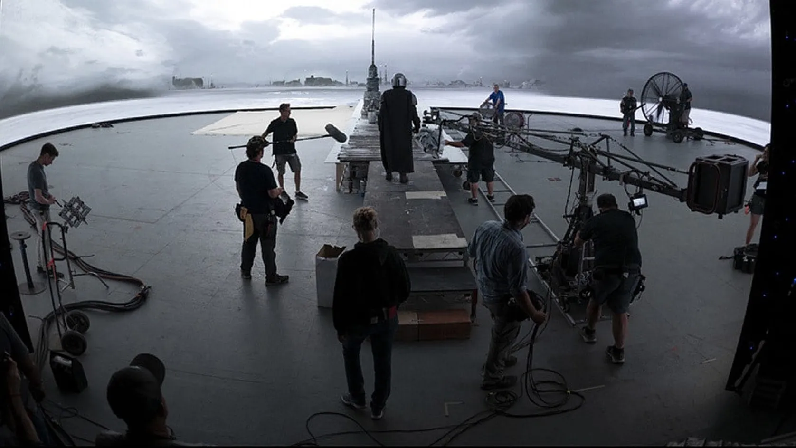

Espoir

Les Technologies du Cinéma
Le cinéma est toujours à la pointe de la technologie, surtout pour les productions à gros budget. Avec de nouvelles manières pour créer des effets spéciaux et les rendre encore plus réels, pour une immersion de plus en plus parfaite.
Du Fond Vert...
La technologie du moment est très clairement les studios virtuels. Pour incruster des personnages dans des décors numériquement, la technique la plus utilisée encore aujourd’hui, est le “fond vert”. L’idée est de placer le comédien devant un fond totalement vert, souvent un tissu tendu. Ensuite, en post-production, on supprime, à l’aide d’un logiciel toute la couleur verte, pour la rendre transparente. Puis, on remplace ce fond transparent par le fond dans lequel nous souhaitons incruster notre personnage. Il y a souvent une étape de tracking, pour rendre le fond dynamique. La plus grande partie du travail se fait donc après le tournage.
Fond Vert utilisé pour le film Bohemian Rhapsody
...Au Studio Virtuel
Avec la technologie du studio virtuel, il faut d’abord créer les décors dans un logiciel de 3D. Ces logiciels sont de plus en plus évolués et permettent aujourd’hui de créer des textures très réalistes. Ces environnements 3D sont ensuite diffusés sur des écrans géants, de plusieurs mètres. L’acteur y est placé devant. La nouveauté derrière ce système est que la/les caméra(s) est détecté par des capteurs sur le plateau, ce qui permet de connaître sont emplacement précis, ainsi que son angle de vue. Grâce à cela, le logiciel calcule en temps réel la partie du décor 3D à afficher sur l’écran. Avec se système, la partie conséquente du travail se trouve en préproduction, pour créer le décor, mais cela facilite toutes les étapes pendant le tournage, et après. Cette technologie est néanmoins nouvelle, et coûte encore cher, mais parfois moins que de payer toute la post-production, si il y a vraiment beaucoup de scène à incruster.
Tournage de la série The Mandalorian en studio virtuel
Utilisations
C’est le cas de la série The Mandalorian (2019), qui n’utilise pour ainsi dire que très peu de décors réels. Ou encore le clip musical de la chanson Black Summer des Red Hot Chilli Peppers, entièrement réalisée avec cette technologie.
J’espère que de nombreuses technologies comme celle-ci viendront rendre le cinéma encore plus immersif qu’il ne l’est déjà.